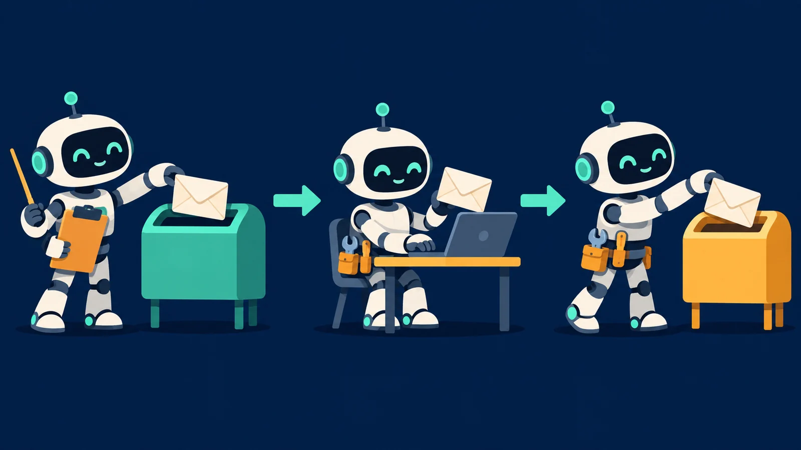
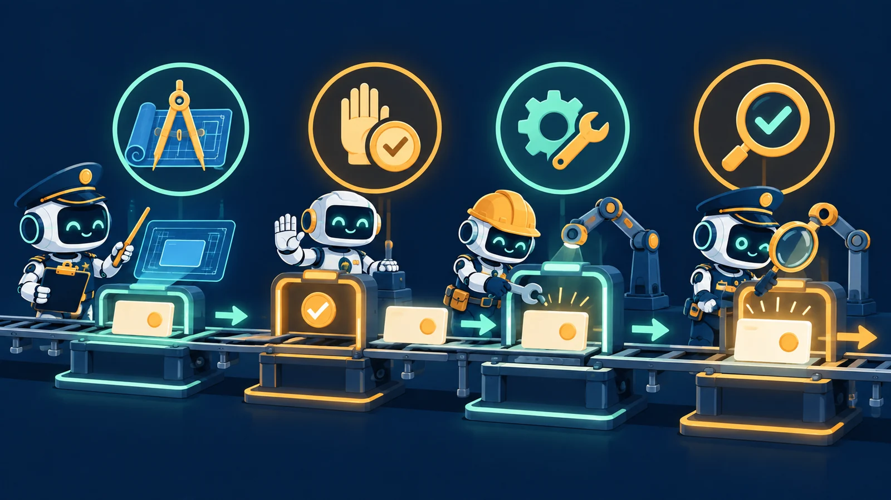

강의 01 · 이어받기
01 / 08
전체 흐름에서 지휘가 작업을 맡기는 구간을 확대합니다
지휘 에이전트(오케스트레이터)는 목표와 범위를 정하고, 작업 에이전트(워커)는 맡은 일을 처리합니다. 강의 00의 전체 흐름에서 이 연결을 이어 살펴봅니다.
역할 사이의 기록
02 / 08대화만으로는 지속 가능한 작업 기록을 대신하기 어렵습니다
역할이 바뀌거나 대화가 끊기면 목표와 허용 범위, 현재 상태를 다시 맞춰야 합니다. 두 역할이 함께 읽을 수 있는 기록 지점이 필요합니다.
요청서 · 입력 계약
03 / 08요청서는 목표·입력·완료 조건·승인 경계를 전달합니다
작업 에이전트는 요청서를 읽고 무엇을 해야 하는지, 사용할 입력은 무엇인지, 어디까지 허용됐는지 판단합니다. 요청서는 수행 범위를 분명히 하는 입력 계약입니다.
응답서 · 처리 결과
04 / 08응답서는 요청 ID와 상태, 결과를 연결해 기록합니다
작업 에이전트는 같은 요청 ID, 완료·부분 완료·실패·차단 상태와 산출물 또는 실패 이유를 응답에 남깁니다. 지휘 에이전트는 그 응답을 원 요청과 짝지어 읽습니다.
목적과 시도
05 / 08목표 식별자는 목적을, 요청 식별자는 한 번의 시도를 가리킵니다
JOB(작업 건)은 목표·입력·완료 조건과 결과를 묶어 추적하는 한 건의 작업입니다. 같은 목표라도 입력을 고쳐 재시도하면 새 요청 ID를 발급해, 각 응답이 어느 시도에 대한 것인지 보존합니다.
상태 · 다음 행동
06 / 08
상태는 결과를 숨기지 않고 다음 행동을 나타냅니다
완료는 필수 조건 충족, 부분 완료는 보존된 산출물과 남은 일, 실패는 실행 오류, 차단은 해결되지 않은 필수 조건이나 안전 경계를 뜻합니다.
실물 대조 · 확인
07 / 08확인자는 식별자를 맞추고 실제 산출물을 읽습니다
응답서의 요청 ID가 원 요청과 같은지 확인하고, 완료 조건을 실제 파일과 대조합니다. 보고 문구만으로 결과가 조건을 충족했다고 판단하지 않습니다.
전체로 되돌아가기
08 / 08요청과 응답의 약속이 확인된 결과로 전체 흐름을 잇습니다
지휘 에이전트는 목표와 경계를 정하고, 작업 에이전트는 맡은 범위를 처리합니다. 요청서와 응답서를 대조하고 실물을 확인하면 다음 단계로 안전하게 이어갈 수 있습니다.
지휘 → 요청서 → 작업 → 응답서 → 실물 대조 → 결과 보고
← 강의 00 전체 동작 흐름